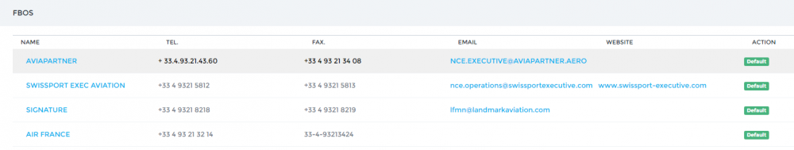

Airports and FBOs¶
OpenJet 360 uses ACU-K-WIK airports and FBOs database. It is automatically kept current with the latest data.
Airport Categorization¶
If you wish to enable the Categorization feature (e.g. A, B and C airport), contact support@openjet.com. Airport will be marked with appropriate category in the flight list and Pilot App. Furthermore, a booking on a uncategorized airport will trigger an email notifications. See Notifications section.
You can then manage your categories on the page Airport > Categories.
Airport Data¶
Menu Airport > Airport List, click on  to view airport data.
to view airport data.
Note
Should an airport not be on the list, add it using Airport > Add available airport page. It will transfer an airport from the master list to your company airport list.
In the main section, select the airports availability options:
Category¶
Select airport Category according to you OM
Availability¶
- Available.
- Private flights only: booking not possible.
- Not available: won’t be available for any user.
Qualification required¶
See Flight Operations section
The FBO section displays available FBO at the aiport. Click on “default” to make an FBO as default on that airport. It will be highlighted and will always be chosen as the FBO for this airport unless another one is selected in the flight list.
The Hotel section allows you to enter any comment regarding the Hotel policy on that airport.
The Fuelers section manages the fuel card used on the airport. Select the default one to be shown on the Pilot App.
The Comment section allows you to enter a comment, which will be shown to Sales users when booking on that airport.
FBO data¶
The FBO list is available on page Airport > FBO list.